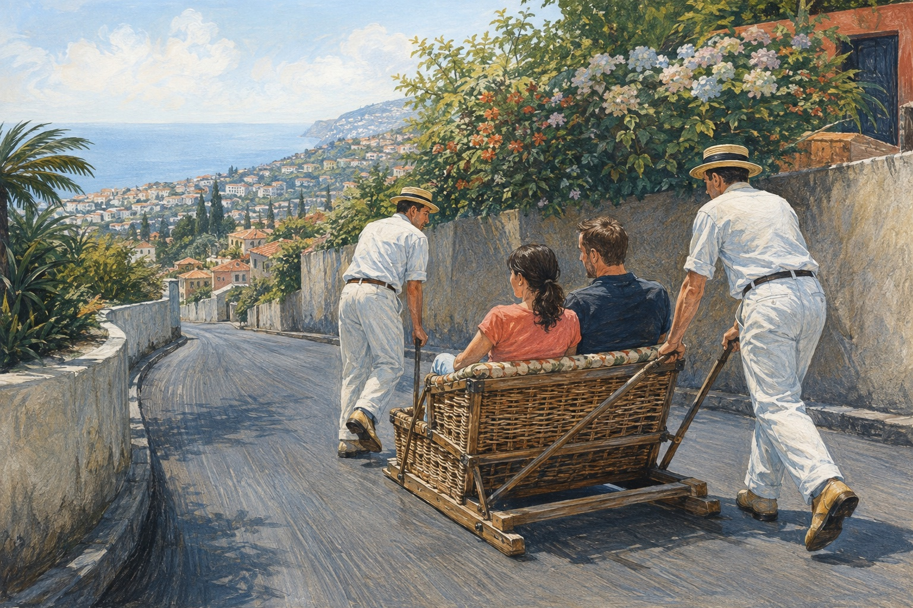

A wooden vehicle, two drivers and a downhill road – but no engine and no snow.

1
Read and select
Read your text. Mark the information you need for the four boxes below.
From public transport to tourist attraction
On the Portuguese island of Madeira, visitors can travel downhill in a basket sledge. The vehicle is made by hand from wicker and wood. It has no wheels, motor or steering wheel. Instead, it slides along the road on two wooden runners.
The sledges were first used in the 19th century. People who lived in Monte, about 500 metres above Funchal, needed a quicker way to get down to the city. Today, tourists use the same kind of transport. Two drivers, called carreiros, push and guide each sledge. Their boots have thick rubber soles, which work as brakes.
The route from Monte to Livramento is about two kilometres long and usually takes around ten minutes. Passengers get wide views over Funchal and the Atlantic – while travelling on an ordinary road in a basket.
2
Prepare your talk
Use the four boxes to write keywords or short sentences in your own words.
A one-minute presentation is a short talk about the most important facts. Use your notes to help you speak.
Start
What is it? Where can you find it? It is called …
Explain
How does it move? Who controls it? It travels …
Special
Why was it useful? Choose one fact.
Think & finish
Would you try it? Why? I would / wouldn’t …
3
Present and teach
Speak for about one minute. Then say your three words and explain their German meanings.